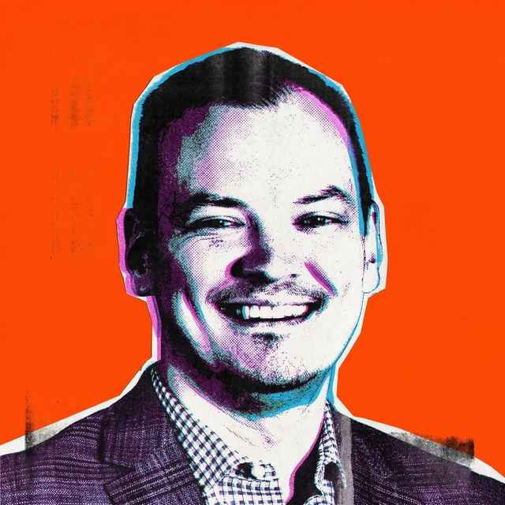

Hi, I'm Zac.
I deliver
enterprise AI.
Leading technical delivery of programs and projects at a Fortune 500 Commercial Real Estate company.
Project Manager / Technology and Data Solutions, Cushman & Wakefield.

Technical Delivery
Program & Project Management
AI SME
Agent Engineering
Solution Architecture
Change Management
Transformation and Adoption
Consulting
Zac Phoenix
Enterprise AI programs.
Enterprise AI programs.
And the systems
underneath them.
- $2M technical program at a Fortune 500.
- Delivering transformation of enterprise contracting with an AI-enabled lifecycle management tool across global markets and business lines.
- Internal AI SME, building AI agents and workflows, consulting on design and solutioning, empowering and educating colleagues across the enterprise.
- Nineteen years of business experience across aviation, construction, engineering, architecture, real estate, technology, and education fields.
What colleagues say
“
Selected work
Outcomes that outlived
Outcomes that outlived
the project.
01 AI contract lifecycle platformCushman & Wakefield · 2026 +
- Contracting ran through people, not systems. Legal and SMEs were the constraint on every agreement.
- Six sequenced implementations, not one big bang. Legal, business, vendor and client functions contract differently.
- Contracting cycle time down by a third.
- Legal and SME review cycles halved. Expert capacity returned to the agreements that warrant it.
- One searchable repository with version control. Reporting stopped depending on someone collating copies.
- Reporting baselines established across service lines that had none. Every improvement after this one can be proven.
02 Agile transformation, global practicesBurns & McDonnell · 2023–2026 +
- Scrum Master for the Agile Center of Excellence on a multi-year transformation.
- Coached leaders and teams across Engineering, Architecture and Construction global practices.
- Built out the Lean Portfolio Management service: tooling, process, adaptive planning.
- Improved agile metrics, team velocity and executive reporting for Data Engineering and Infrastructure teams.
03 monday.com as an internal productBurns & McDonnell · 2023–2026 +
- Product Owner of monday.com across the organisation.
- Designed and owned end-to-end PPM and workflow solutions.
- Partnered with portfolio management to build a new portfolio board from the ground up.
04 Education startup, six yearsGP International, Seoul · 2017–2023 +
- Founded an education company serving private academies in the East Asian market.
- Led a multimedia product team of six across textbooks, video, audio and software.
- Still delivering a revenue stream of KRW 200,000,000 per month (roughly USD 150,000).
05 Aviation consulting: Dubai, JAL, IcelandairTrans World Consulting, London · 2007–2011 +
- Planning, coordination and risk management on high-profile international projects.
- £400K Future Scenario Planning project for Dubai airports.
- EU Carbon Credit Viability project for Japan Airlines. Confidential US market studies for Icelandair.
What I build
Fifteen years taught me what
Fifteen years taught me what
project software gets wrong.
Product · In build
ProjecTool
- A project record written by reading.
- Drop in a transcript, chat thread or email. It proposes structured changes.
- Work must be justified. One owner per result. Provenance mandatory.
System · Running
The software factory
- Agents run tickets end to end under a written operating contract.
- Verification gates that cannot be edited away.
- Agents hold their own identity, so the audit trail stays clean.
Consulting
Edge Waypoint
- Targeted agents for businesses without a PMO.
- Enterprises fund a program around AI. Smaller companies cannot.
- Narrow agents against specific business cases, sized to the company.
Credentials
Fourteen certifications.
Fourteen certifications.
Four capabilities.
Delivery at scale
Programs and portfolios, funded and governed
AI delivery
AI run as data work, not software work
Agile & adaptive
Framework-agnostic delivery and problem framing
Adoption & change
The part that decides whether any of it gets used
About
Nineteen years making
Nineteen years making
complicated things work.
- 2011–14BA (Hons) Philosophy, Religion and Ethics. University of London.
- 2007–11Aviation consulting in London. Dubai airports, Japan Airlines, Icelandair.
- 2015–23Seoul. Taught philosophy and ethics, then founded an education company and ran it for six years.
- 2023–26Burns & McDonnell. IT delivery, Agile transformation, portfolio management.
- 2026–Cushman & Wakefield. Enterprise AI programs and internal AI solutioning.
Every step has been the same skill. Making complicated things work for people who did not build them.
- Moving further up the stack: solution architecture, software engineering, data architecture.
- Building the agent, not only commissioning it.